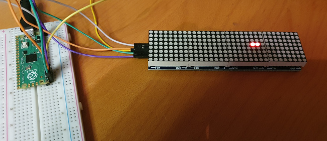
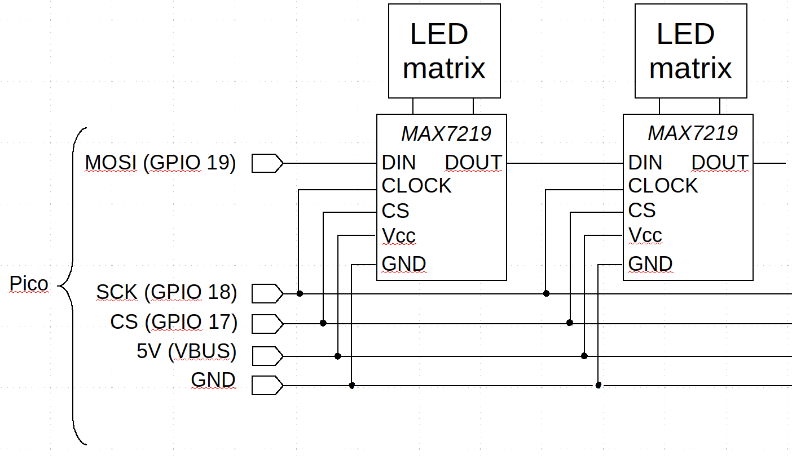

Controlling a chain of MAX7219 LED matrices using C on a Raspberry Pi Pico
 LED matrix displays are widely used in applications like sign-boards,
clocks, and weather displays. They are low-resolution
devices, designed to be viewed from a distance. Many of these
devices are based on the Maxim MAX7219 serial 8-digit display IC.
These ICs can control 64 independent LEDs, electrically
arranged in a grid
pattern. Traditionally the LEDs would be the independent bars of
a seven-segment number display, but a straightforward square matrix
of LEDs can also be created.
LED matrix displays are widely used in applications like sign-boards,
clocks, and weather displays. They are low-resolution
devices, designed to be viewed from a distance. Many of these
devices are based on the Maxim MAX7219 serial 8-digit display IC.
These ICs can control 64 independent LEDs, electrically
arranged in a grid
pattern. Traditionally the LEDs would be the independent bars of
a seven-segment number display, but a straightforward square matrix
of LEDs can also be created.
Pre-built LED matrixes based on the MAX7219 are widely available, in sizes 8x8, 32x8 and larger. The larger displays are typically divided into semi-independent 8x8 modules. Each module has its own MAX7219, and the ICs are chained together so a single set of control lines can operate all the modules together.
The kind of device this article is mostly concerned with is shown in the photo below. These devices are widely available from on-line suppliers, and cost about £6 each in the UK. The one shown in the photo is mode from four 8x8 modules, and has connections at both ends, so the units can be chained to give larger displays. The displays are not reversible, however -- there is an "input" and an "output" end, as I will explain.

It's also possible to get seven-segment display modules based on the MAX7219. These work in fundamentally the same way as a LED grid, except with a different LED layout different layout. However, because seven-segment displays are (or, at least, were) so common, the MAX7219 has built-in logic for decoding numeric data into specific patterns of LED bars. I won't be describing this logic in this article; most of the basic principles remain the same whether you're dealing with an LED matrix or a 7-digit display array.
Note:
You might notice that I'm not using a level-shifter to connect the Pico to the display module. The module is designed to run at 5V or so, and I'm powering it from the USB connection. The datasheet says that a "logic high" signalling level is at least 3.5V, and the Pico's GPIO won't reach that. In practice, though, it seems to work. Unlike I2C, SPI lines are capable of sourcing current, and I wouldn't connect a 5V output to the Pico's GPIO. We're safe here because the MAX7219 does not have any outputs.
I'm only giving snippets of C source code in this article; full source code is in my GitHub repository.
The SPI interface
The MAX7219 uses a three-wire serial interface. This interface uses a clock line, a data line, and a "chip select". In the datasheet, these interface lines are denoted CLK, DIN (data in), and LOAD respectively. The purpose of the chip select line is to indicate when data is being supplied to the module. An alternative to creating a very long chain of LED modules is to connect them in parallel, and use different chip select lines to indicate which particular module is being written. In fact, a mixture of chaining and using individual chip selects can be useful when dealing very large displays.
To store a single bit of data, the microcontoller sets the data bit on the DIN line, then pulses CLK high. The data bits are grouped into packets by the LOAD (chip select) line. This line is active low, meaning that the controller sets it low at the start of data transmission, sends the data, and then sets it high again. When LOAD goes high, the data is latched, and the MAX7219 interprets it. The chip accepts 16-bit data packets, although only 12 bits are used. If the chip select line remains high, the MAX7219 ignores what's happening on the data and clock lines -- it is this that allows modules to be used in parallel.
This kind of data interface is broadly compatible with the SPI ("serial peripheral interface") scheme that most microcontrollers support. It's perfectly possible to control a device like the MAX7219 by setting specific GPIO pins to the necessary logic levels at software-controlled times, a process known colloquially as "bit banging". However, SPI is so popular that most microcontrollers have built-in hardware to do it, and the Pico is no exception. The Pico C SDK has specific functions for sending and receiving data over SPI, as I'll explain later.
Although SPI interfaces have provision for both sending and receiving, in ths application the Pico only sends. Because SPI is a rather generic interface, you'll see various names are used for SPI-compatible signalling lines. I think the most popular are MOSI (master out, slave in), MISO (master in, slave out), and SCK (serial clock), and CS (chip select). The Pico data sheet uses the labels TX, RX, SCK, and CS. The association between these different naming schemes, which we'll need to bear in mind when wiring up the display, is shown in the table below.
| Function | SPI | Pico | MAX7219 |
|---|---|---|---|
| Output from controller | MOSI | TX | DIN |
| Input to controller | MISO | RX | N/A |
| Clock | SCK | SCK | CLOCK |
| Chip select | CS | CS | LOAD |
The display module I'm using labels its connections "DIN", "SCK" and "CS", so the wiring should be relatively clear (but see the specific example later if it isn't).
How MAX7219 devices are chained
This is the part of the interfacing scheme that is likely to cause confusion, if any is. The circuit diagram below shows how the MAX7219 devices are typically arranged in a multi-module design. Each module has common connections to SCK, CS, and the power supply lines. Only the first module in the chain has a direct connection to MOSI; modules are chained by connecting the DOUT (data out) pin of one MAX7219 to the DIN pin of the next device in the chain.

Each MAX7219 device in the chain requires a 16-bit data packet (whose format I'll describe later). If the devices all share common SCK and CS lines, how can we address the individual devices in the chain?
Well, we can't -- not really. What we can do, though, is to send multiple 16-bit data packets, one packet for each MAX7219 device, so that each device gets 16 bits of the total transmission.
At the start of a data transmission, data is read by the first MAX7219 in the chain, until it has read 16 bits. Thereafter, each time a new bit is clocked in, the data in the first MAX7219 overflows its shift register, and earlier data appears on DOUT, and thus on DIN of the next device. So after sending 32 bits, we've filled the shift registers of two devices. After 64 bits, we've filled four devices, and so on.
The potentially confusing aspect to this operation is that the first data bit sent actually ends up in the MAX7219 device at the end of the chain, not the start. This can lead to a fair bit of head-scratching when it comes to writing the software.
It should be clear from the previous discussion that, to change the state of the LED in the module nearest the controller, we could in principle only send 16 bits. However, to modify the module furthest from the controller we have to send 4 x 16 = 64 bits and we have to ensure that we set the correct values even for the LEDs in the module we don't want to change. Since there's no way to read the state of the LEDs, the software has to keep track of the state of every LED in the matrix. Since the state of each LED only requires on bit of storage, this is not burdensome for a modern microcontroller.
The MAX7219 data packet
The MAX7219 expects a 16-bit data packet, but only 12 bits are used. The reason for using a 16-bit packet is that microcontrollers are likely to send data byte-by-byte. Most, in fact, will be unable to do anything else.
So we can think of the data packet as being two bytes, of which the first byte uses only the bottom four bits. These four bits have a dual purpose: when they are set to a number between 1 and 8, they indicate that the byte that follows is a bit pattern for a particular row of LEDs. (rows are numbered 1-8; writing "row 0" has no effect). When the bottom four bits of the first byte are a number between 10 and 15, the number is interpreted as a command, and then the second byte is interpreted as an argument to the command.
So, for example, the sequence of bytes {3, 0xAA} indicates that the LEDs in row three should be set according to the hex number 0xAA (that's binary 10101010, so the LED will be set in an alternating on-off pattern). On the other hand, sending {10, 3} sets the LED brightness to 3 (out of 15 possible levels). There is, of course, a list of command codes in the datasheet. In practice, the brightness command is likely to be the only one that needs to be changed once the device is set up.
Doing SPI on the Pico
The Pico C SDK depends, for better or worse, on the use of CMake. In what follows I'll be describing what needs to be set up in CMake. I don't normally use CMake, and I have no wish to get into it any further than I have to. So I don't necessarily know what these settings do at the build level. If you want to know, good luck finding out. To be best of my knowledge, the Raspberry Pi folks don't want to document the build process in any more detail than "use CMake".
To use the SPI library, you'll need to enable it in the CMake
CMakeLists.txt file, like this:
target_link_libraries (my_binary hardware_spi hardware_gpio ...)
Then in your C code you'll be able to:
#include "hardware/spi.h" #include "hardware/gpio.h"
The GPIO pins in the Pico are multi-functional. Although there are only two built-in SPI interfaces, they can each be assigned to two pairs of GPIO pins. What this means is that set-up is a two-step process: setting up the SPI interface itself, and assigning the relevant pins to SPI. You'll need to look at a Pico pinout chart to see which pins are available to which SPI channel. In this article I'll assume we want to use SPI0, on pins 17 (CS, chip-select), 18 (SCK, clock), and 19 (MOSI, or TX).
Here's the basic set-up code for the SPI interface:
#define MOSI 19 #define SCK 18 #define CS 17 #define SPI spi0 #define BAUD (1000*1000) spi_init (SPI, BAUD); gpio_set_function (MOSI, GPIO_FUNC_SPI); gpio_set_function (SCK, GPIO_FUNC_SPI); gpio_init (CS); gpio_set_dir (CS, GPIO_OUT); gpio_put (CS, 1);
Note:
It's difficult to give general advice about the baud rate -- in my tests, 1,000 kbaud works well enough with short connections in a non-hostile environment. According to the MAX7219 datasheet, the device should be capable of at least at least twice this rate, perhaps a bit more. However, that would be in ideal conditions. I don't know any better way to set the baud rate than by testing.
Note that, although the CS line is part of the SPI pin group, the SPI API does not control it. That's because it doesn't know how many bytes comprise a data transfer. So, to write two bytes of data to the first MAX7219 in the chain, in principle we'd do this:
gpio_put (CS, 0); // Set CS low to start the transfer
uint8_t buf[] = {first_byte, second_byte};
spi_write_blocking (self->spi, buf, 2);
gpio_put (CS, 1); // Set CS high at the end
That is, we're demarcating the data output by the low state of the CS line.
In practice, this code won't work reliably on the Pico, because it's too fast. The CS line has to settle in its new state for a few clock cycles before sending any data. The SDK examples use this approach to generating a very short delay:
gpio_put (CS, 0);
asm volatile ("nop \n nop \n nop");
...
gpio_put (CS, 1);
asm volatile ("nop \n nop \n nop");
These NOPs do nothing -- that's the whole purpose: they just absorb a couple of clock cycles.
The remaining piece of the puzzle is how to address multiple devices in the chain. As I said above, we can't do that. We have to send data to every module up to an including the module to be addressed.
Let's consider sending a particular row's bit pattern to the third module in the chain. We could do that like this:
gpio_put (CS, 0);
uint8_t row = //.. select row
uint8_t pattern = //.. determine bit pattern for row
uint8_t buf[] = {0, 0, 0, 0, row, pattern};
spi_write_blocking (self->spi, buf, 6);
gpio_put (CS, 1);
What we've done here is to write two 16-bit blocks of "do nothing" before the instruction to write the row. This whole 48-bit pattern is written in one burst with the CS line low -- that's how the devices know that the data is for a chain, not just the first module.
Of course, this approach is a bit wasteful of SPI resources -- we're sending a lot of data that serves no useful purpose. Since we have to record all the individual LED states anyway, we might as well write out all the LED values in a particular region of the display in one operation. Whether the "region" in question is a row, or part of a row, or the whole display, depends on the application.
Closing remarks
So that's the basic idea: initialize the SPI and allocate pins to it; send data in groups of bits that are long enough to reach the module that should process them, padding the transmission with zeros if necessary.
The Devil, as ever, is in the details. Although the SPI interfacing is almost trivial, the complication is keeping track in software of what LEDs have changed state, and generating the most efficient sequence of bits that will reflect the state change in the hardware. Some particular bit-juggling will almost certainly be required, to accomodate the way that a specific manufacturer has wired the MAX7219 chip to the LEDs. I'm not going to go into that detail here -- it's not a problem with SPI or interfacing, but a general problem of C development.
For a specific implementation, you can find a complete, documented example in my GitHub repository.